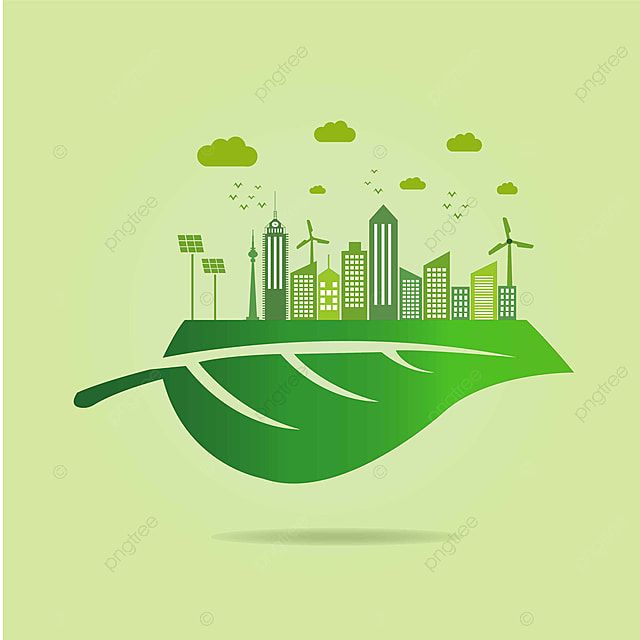
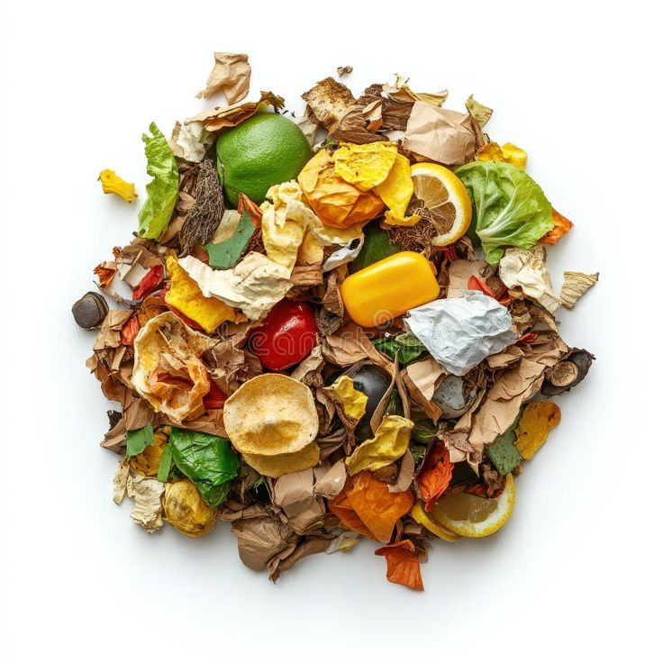

"Segregate today, sustain tomorrow."
We empower households with a smart, technology-driven system for accurate waste identification and segregation. By connecting your sorting efforts directly with recycling and processing facilities, we improve urban sustainability.


Urban waste management suffers from poor segregation at the source, leading to contamination of recyclable materials and increased landfill burden. Current systems rely on manual processes and limited awareness.
AI-powered tools enable accurate waste identification and segregation right at the household level.
Directly link your sorted materials with appropriate recycling and processing facilities.
Improve efficiency and sustainability through data-driven insights on waste composition.
A comprehensive framework integrating the source with the solution.
Use the SortWise app to scan your waste. Our AI instantly categorizes it to ensure zero contamination of recyclables.
Your segregated waste is digitally logged and routed directly to specialized local processing facilities.
Monitor your household's impact while administrators optimize urban recycling infrastructure using real-time composition data.
Segregate today, sustain tomorrow. Join the network of smart households reducing landfill burden.
Create Your Household Profile